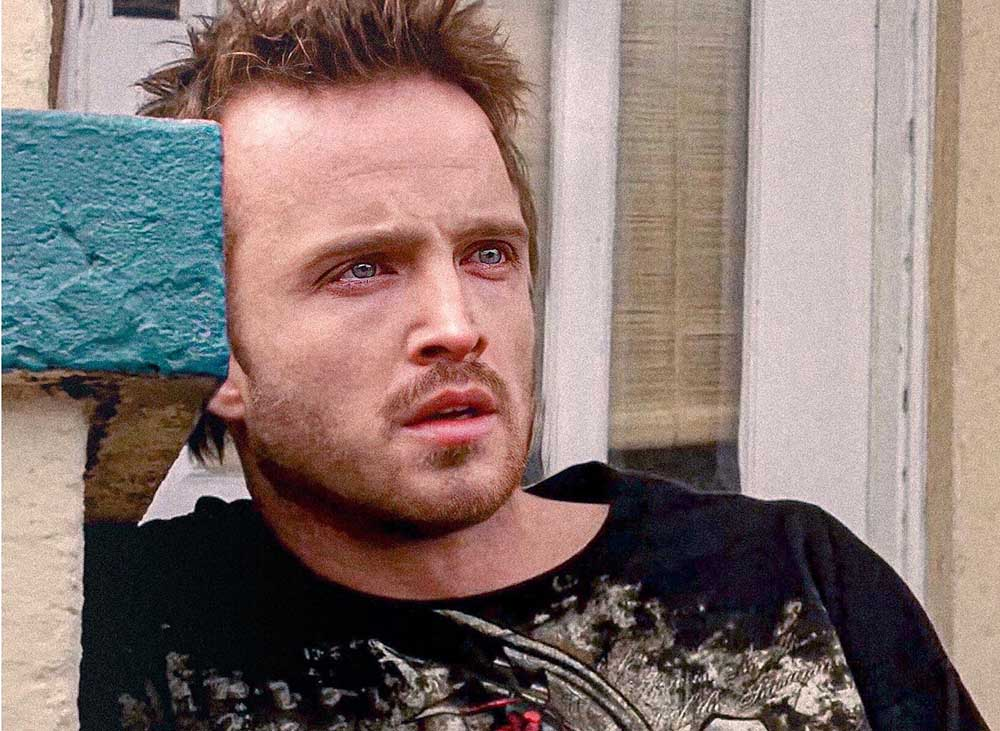
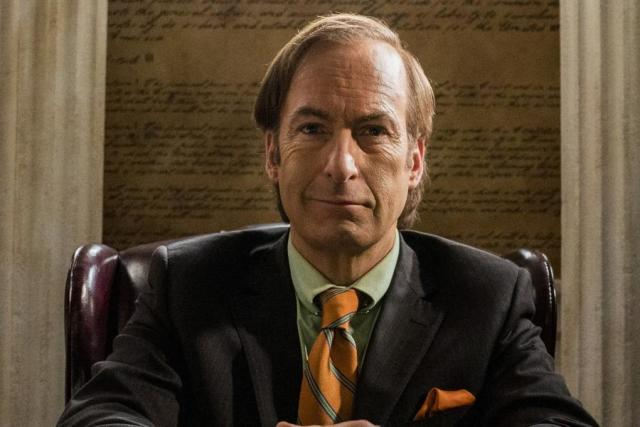

Personajes:
-Walter White (apodado como Heisenberg): Es presentado como un profesor de quimica que cofundo la empresa Gray Matter Technologies. Dejo la empresa y vendio sus acciones por $5,000. En su cunpleaños 50 se le diagnostica cancer de pulmon. Despues de esto Walter decide cocinar y vender metanfetamina, junto a su socio Jesse Pinkman, que es un antiguo alumno suyo, con dinero que ganaba se lo iba dejando a su familia y luego adopto el apodo de Heisenberg.

-Jesee Pinkman: Jesee Pinkman nacio en septiembre de 1984, en una familia de clase media alta en Albuquerque. Debido a su drogadiccion, Jesse tiene una realcion muy mala con sus padres, quienes lo hechan de la casa. Pinkman era un mal estudiante en la escuela, donde Walter White era su profesor de quimica.
-Saul Goodman: Es un abogado que ayudaba a criminales en situaciones dificiles y especialmente a Walter y Jesse, tambien Saul se adentro mucho mas al negocio de la venta de la metanfetamina, haciendose socio de ellos, donde tambien les ayudaban en varias cosas.
-Skyler White: A lo largo de los años, Skyler ha tenido varias fuentes de ingresos escasas: trabajando como contable para la firma Beneke Fabricators, escribiendo cuentos y vendiendo articulos en eBay. Tienen 2 hijos con Walter y se llaman Walter Jr y Holly.